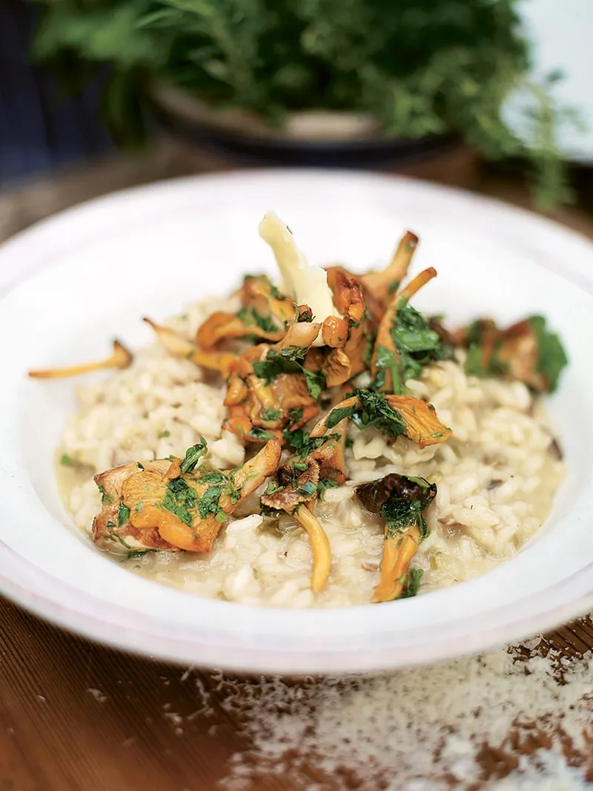

Mushroom Risotto

Jamie Oliver's Twist on the classic
“I've grilled the mushrooms and scattered them on top of the risotto for a gorgeous, nutty flavour ”
- 1 small onion , peeled and finely chopped
- 2 sticks celery , trimmed and finely chopped
- 400 g risotto rice
- 75 ml vermouth or white wine
- sea salt
- freshly ground black pepper
- 4 large handfuls wild mushrooms (try shiitake, girolle, chestnut or oyster) , cleaned and sliced
- a few sprigs fresh chervil, tarragon or parsley , leaves picked and chopped
- 1 lemon , juice of
- 1 teaspoon butter
- 1 small handful Parmesan cheese , freshly grated, plus extra for serving
- extra virgin olive oil
- 1.5 litres organic chicken or vegetable stock , hot
- 1 handful dried porcini mushrooms
- olive oil
- A mushroom risotto can be taken in many different ways, depending on what kind of mushrooms you have and whether they are introduced at the very beginning of cooking or just added at the end, as I’m going to do here. The inspiration for this recipe came when I was in Japan and saw mushrooms being cooked completely dry on a barbecue or griddle pan. This way of cooking brings out a really fresh and nutty flavour in them; perfect for being dressed lightly with olive oil, salt and lemon juice or stirred into a risotto at the last minute before serving.
- Heat your stock in a saucepan and keep it on a low simmer. Place the porcini mushrooms in a bowl and pour in just enough hot stock to cover. Leave for a couple of minutes until they’ve softened. Fish them out of the stock and chop them, reserving the soaking liquid.
- In a large pan, heat a lug of olive oil and add the onion and celery. Slowly fry without colouring them for at least 10 minutes, then turn the heat up and add the rice. Give it a stir. Stir in the vermouth or wine – it’ll smell fantastic! Keep stirring until the liquid has cooked into the rice. Now pour the porcini soaking liquid through a sieve into the pan and add the chopped porcini, a good pinch of salt and your first ladle of hot stock. Turn the heat down to a simmer and keep adding ladlefuls of stock, stirring and massaging the starch out of the rice, allowing each ladleful to be absorbed before adding the next.
- Carry on adding stock until the rice is soft but with a slight bite. This will take about 30 minutes. Meanwhile, get a dry griddle pan hot and grill the wild mushrooms until soft. If your pan isn’t big enough, do this in batches. Put them into a bowl and add the chopped herbs, a pinch of salt and the lemon juice. Using your hands, get stuck in and toss everything together – this is going to be incredible!
- Take the risotto off the heat and check the seasoning carefully. Stir in the butter and the Parmesan. You want it to be creamy and oozy in texture, so add a bit more stock if you think it needs it. Put a lid on and leave the risotto to relax for about 3 minutes.
- Take your risotto and add a little more seasoning or Parmesan if you like. Serve a good dollop of risotto topped with some grilled dressed mushrooms, a sprinkling of freshly grated Parmesan and a drizzle of extra virgin olive oil.